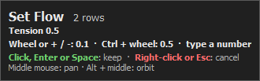
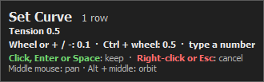
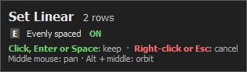

Tools / Edge Flow
Edge Flow
Set Flow, Set Curve and Set Linear: reshape a row of vertices.
What it does
Three tools reshape a selected row of vertices or edges without changing how it is connected. Only positions move.
- Set Flow makes the row follow the surface around it.
- Set Curve turns the row into a curve between its two ends.
- Set Linear makes the row straight between its two ends.
How to use it
- Select the vertices, edges or borders you want to change (a row of them).
- In the right-click menu, choose Set Flow, Set Curve or Set Linear (it is in the group with Connect). It only shows at vertex, edge and border level.
- Flow and Curve have a Tension value: use the mouse wheel or + / - (0.1 a step), or type a number. Set Linear has no value to change.
- Click, Enter or Space keeps it. Right-click or Esc cancels.



Options
| Key | Option | What it does |
|---|---|---|
| E | Evenly spaced (Set Linear) | Spreads the vertices at equal distances along the straight line. |
Ctrl + wheel changes Tension by 0.5. The viewport can still be moved while the tool runs: middle mouse pans, Alt+middle orbits, the wheel zooms.
Good to know
- Set Flow skips rows that do not have polygons on both sides. Set Curve and Set Linear skip rows that are closed or too short. The box tells you how many were skipped.
- Undo is one step.